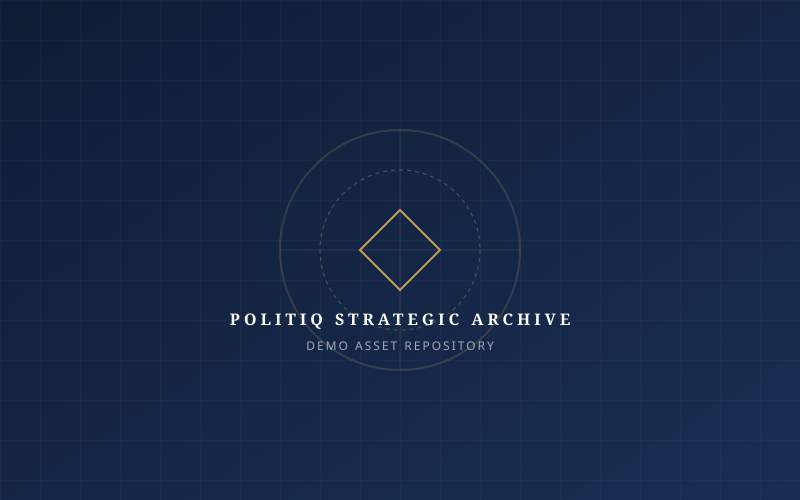

Illustrative project showcases demonstrating our applied research, software infrastructure, digital war rooms, and ground operations.
In compliance with non-disclosure covenants and statutory electoral confidentiality, client names, geographical jurisdictions, and ballot results are masked. The cases below represent representative architectural prototypes and operational deployments.

Stratified sample survey of 38,000 households examining urban transit access, affordable housing perceptions, and local anti-incumbency sentiment across 45 electoral divisions.
Enterprise voter database and volunteer hierarchy system serving 1,400 precinct captains with zero-trust role-based permissions and encrypted voter interaction logging.
24/7 digital monitoring and rebuttal desk analyzing broadcast television transcripts and social feeds, producing under-15-minute fact-check graphics and video explainers.
Building and deploying an 8,500-member grassroots volunteer force across 850 polling booths. Included standardized canvassing academy training and voter contact tracking.
Rural field research analyzing fertilizer subsidies, minimum support price awareness, and credit cooperative access among 22,000 farming households across 14 rural districts.
Interactive spatial mapping engine integrating census layers, polling station boundaries, and historical turnout data to predict high-volatility voter precincts.
Cinematic multi-part biographical documentary series capturing public service career milestones, complemented by an interactive digital manifesto localized in 4 dialects.
Centralized war room managing 1,200 polling agents, legal response attorneys for booth irregularities, and active voter mobility coordination throughout voting hours.
In-depth qualitative study engaging first-time voters aged 18-25 on vocational training needs, employment expectations, and digital news consumption patterns.